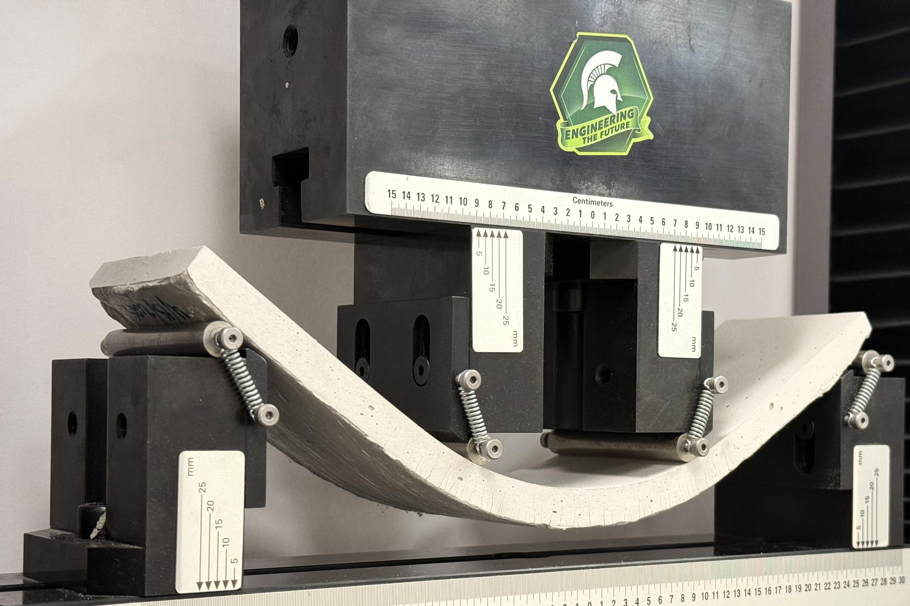
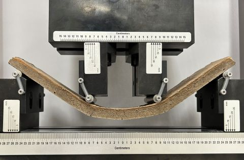
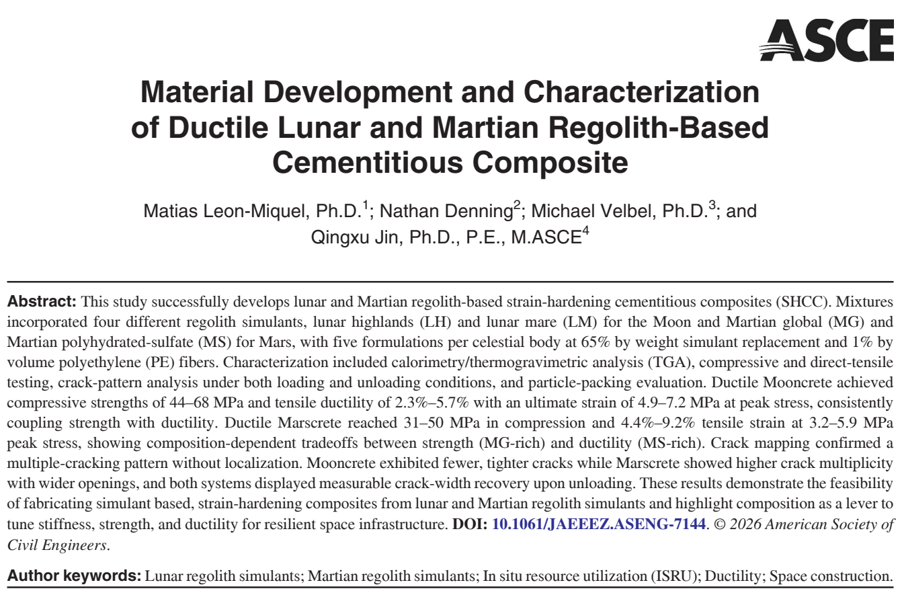
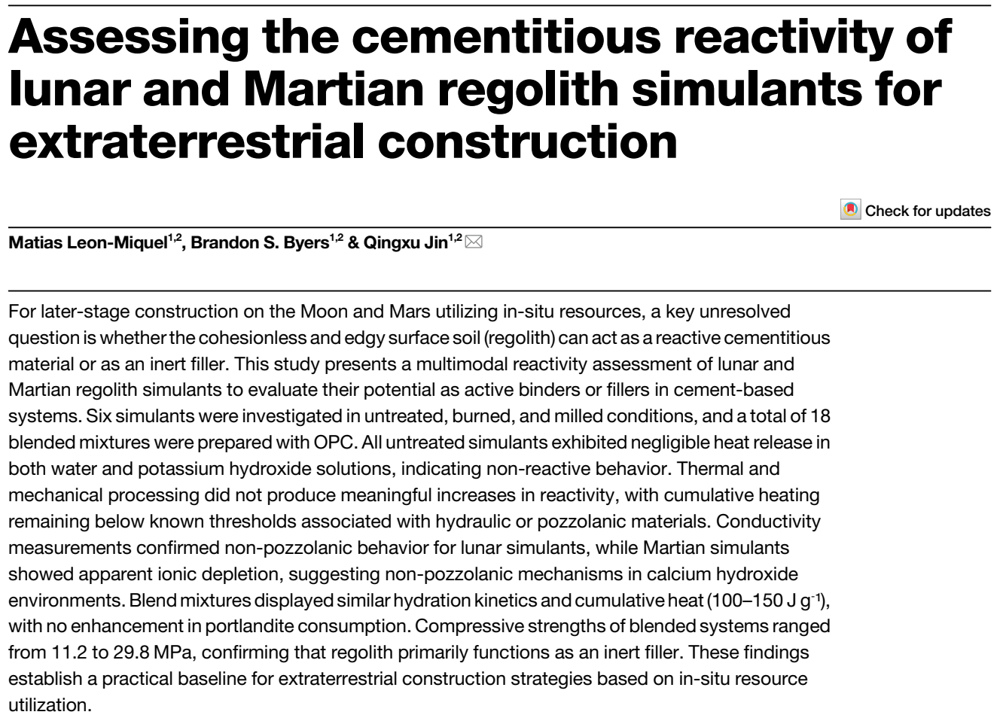
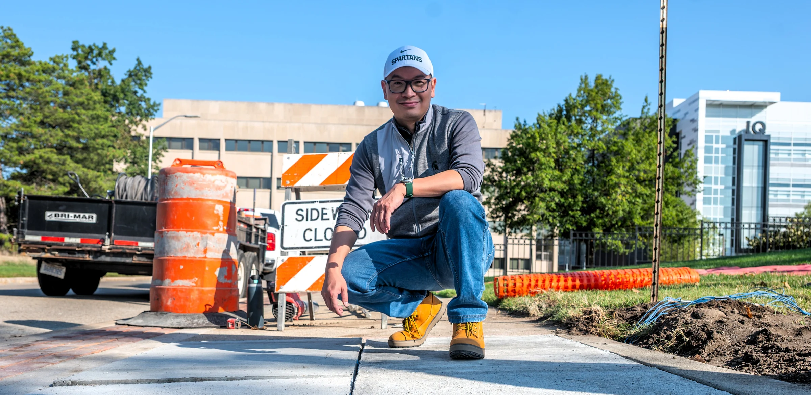

Structures
Composites & mechanics
We develop fiber-reinforced composites and test how they carry loads, deform and control cracking in structural applications.
Explore this research area
RISE Infrastructure Materials Laboratory
RISE stands for Resilient, Intelligent, Sustainable and Energy-efficient. We design materials that can withstand demanding conditions and make better use of resources.

RISE Infrastructure Materials Laboratory
A bending test reveals where cracks form and how they spread. We use those observations to design fiber-reinforced composites that keep cracks narrow under load.

RISE Infrastructure Materials Laboratory
Cement-based materials can capture pollutants from the air and bind CO₂ in solid minerals. We study how to bring those reactions into everyday infrastructure.
Science for the built environment.
From the chemistry of materials to their performance in the field, we develop materials for infrastructure that is more resilient, sustainable and responsive.
All research areas →
Structures
We develop fiber-reinforced composites and test how they carry loads, deform and control cracking in structural applications.
Explore this research area
Materials design
We combine experiments, imaging and computational models to measure how materials behave and use those findings to guide their design.
Explore this research area
Space & energy
We study construction materials for harsh settings, from geothermal wells on Earth to construction with simulated lunar and Martian soils.
Explore this research areaIdeas grounded in evidence.
Recent work in materials design, infrastructure performance and environmental applications.
View publications →2026
ACS Omega 11(27), 40092–40109
Read publication →
2026
Journal of Aerospace Engineering 40(1), 04026078 · online 2026, issue January 2027
Read publication →
2026
npj Space Exploration 2, 29
Read publication →From the lab.
Research highlights, team milestones and open positions at RISE.
All lab news →
POSITION OPENED 2026-11-02 · OPPORTUNITIES
RISE is recruiting postdoctoral scholars in advanced materials for energy infrastructure and resource resilience.
Read story →
2026-10-21 · RESEARCH
A review led by Xiaoqiang Ni examines how phase change materials help concrete store heat and how they affect strength and durability.
Read story →
2026-09-24 · ALUMNI
RISE alumni have started new roles in engineering and technology consulting and continued their studies in graduate programs.
Read story →Meet our team.
Our students and researchers bring materials science and engineering together to tackle challenges in infrastructure.

RISE group meeting · Fall 2026